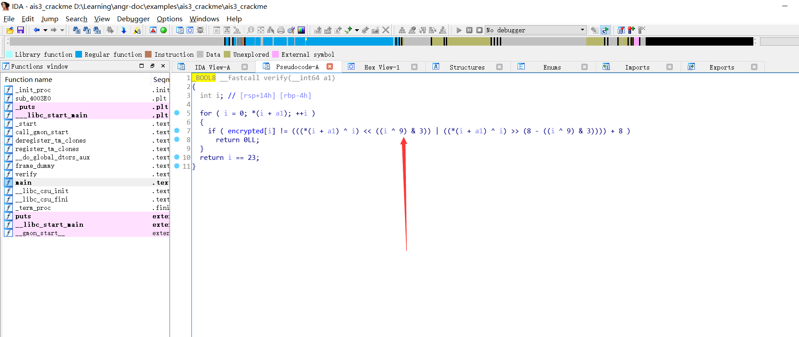

0x01 angr简介
angr是一个基于python的二进制代码分析工具，能够通过符号执行自动完成对二进制文件的分析。早期的符号执行是静态的，依靠分析程序代码来进行工作，之后引入了动态符号执行，通过模拟指令来运行程序，找出控制流。
符号执行:
1 | 来自维基百科 |
angr分析程序过程:
1、将二进制文件载入angr分析系统
2、将二进制程序语言被VEX IR转换为中间语言(IR)
3、将IR转化成语义较强的表达形式，方便进一步的分析
4、执行分析(静态分析、程序空间符号探索)
5、求解，根据符号建立约束关系(claripy)
0x02 angr安装
首先安装依赖库:
$ sudo apt-get install python-dev libffi-dev build-essential virtualenvwrapper
virtualenvwrapper是一个python虚拟机，使用这个虚拟机的原因主要是angr会修改libz3和libVEX，可能会影响其它程序的正常使用。
创建一个名为angr的虚拟环境:
$ virtualenv angr
激活虚拟环境:
$ source ~/angr/bin/active
激活虚拟环境以后，终端界面最开头会出现(angr)字样
之后用pip安装angr:
$ pip install angr
0x03 angr常用对象
- 创建Project
- 设置state
- 新建符号量:BVS(bitvector symbolic)或BVV(bitvector value)
- 把符号设置到内存或其它地方
- 设置simulation managers，进行路径探索
- 探索(explore)
- 建立约束关系求解
这里贴一下官方文档
0x04 angr简单使用
贴一下angr最基本的使用
目标程序地址:
https://github.com/angr/angr-doc/tree/master/examples/ais3_crackme
载入ida看一下发现主要是我们逆向这个校验函数:

这个函数本身不复杂，这边手逆也是毫无问题，但如果angr的话，其实可以不用看逻辑，直接跑出来的。
这边贴下脚本:
1 | #!/usr/bin/env python |
0x05 局限
angr目前还是用在CTF中比较多，它的局限性很大，一旦程序路径过多，限制条件太复杂，由于其是通过遍历路径和约束求解符号，将会消耗大量的时间和内存。